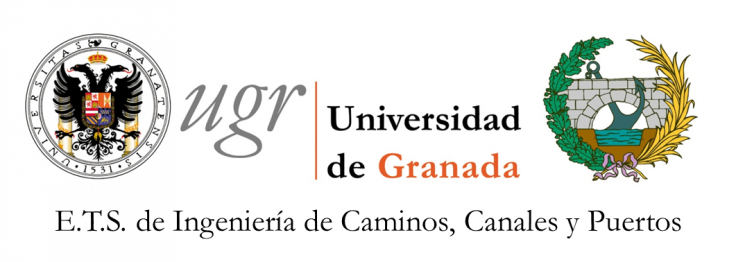

Portfolio
My name is Pablo Benavides, I am a Civil Engineer specialized in Intelligent Transport Systems.
I use Python to solve transport related problems.
I speak Spanish, German and English with proficency. I can also speak SQL.
I have international experience, having studied in Germany, the USA and Spain and worked for several years in both Spain and Argentina.
Here is my résumé.
2019 - Present:
Analista de Datos Georreferenciados en Nación Servicios:
Nación Servicios is the company that manages SUBE, the argentinian public transport card. This card works in almost every province in Argentina, making it the greatest centralized public transport system in the world. Millions of users and tens of thousands of Buses, Trains and Metro are included in the biggest database of its kind. My job as Analista de Datos Georreferenciados consisted on extracting valuable information from this database. Estimating OD Matrices, finding optimal routes and helping solve transport issues such as the accordion effect are some of my tasks.
2016 - 2019
Transport Modeller at Aimsun
Develop scripts and APIs for Traffic Modelling software Aimsun Next to assist great sized models (Whole cities and counties). Develop Traffic Studies, proof of concepts in public transport and Connected Autonomous Vehicles.
2015 - 2016
Internship at Transport Simulation Systems
Before the rebranding to Aimsun. I was an intern in the department of Professional Services at TSS. Where I helped providing scripts and APIs for projects. Took a main role in the study of Barcelona's proposed tram union through Diagonal Street.
2014 - 2015
Exchange in Bergisches Universität Wuppertal
Via Erasmus program I studied Bauingenieurwesen in the Bergisches Universität Wuppertal. It was a normal year until the point I looked for a final project. I found an amazing group whose discipline was Pedestrian dynamics. My professors were basically the inventors of this discipline. I used Python to analyze pedestrian dynamics experiments and that is where I realized what I wanted to do for a living. Combine transport with my new born passion for programming.

2010 - 2016
Grado en Ingeniería Civil at Universidad de Granada
Four year degree in which I learnt about structures, road design, traffic, materials, etc. I also had the time to improve my english skills, learn german and start playing with portuguese and italian..
